Declaración
María no entra para ser mirada. Entra para nombrarse. Su voz abre la noche.
La música de Piazzolla mirando las heridas de la ciudad.
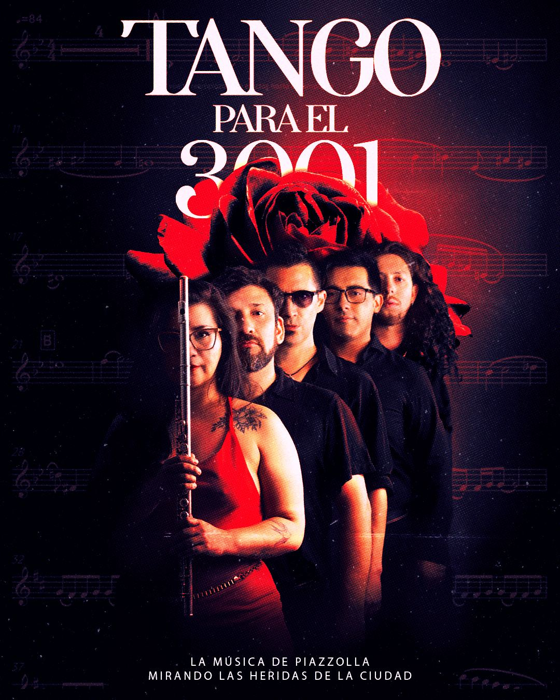
Ópera urbana / Manifiesto escénico
Tango para el 3001 es una experiencia escénica semi operística que invita a un público joven a volver a entrar en la música de Piazzolla desde las preguntas del presente.
La obra cruza el tango, la escena y la voz para hablar de una mujer que se declara dueña de su deseo, de una ciudad que indigna por sus injusticias y de un cuerpo que se transforma ante los ojos del público.
En el centro está María: una fuerza femenina que contiene, mira y abraza aquello que el mundo suele abandonar.
María no da a luz a un niño.
Da a luz una ciudad.
Una Buenos Aires futura, renacida desde la empatía, la rabia, la ternura y una nueva visión de la realidad.
María se declara dueña de su deseo. Gastón descubre la herida de la ciudad. Nina corre perseguida por la noche. Y desde los restos de una escena derrumbada, la ternura se vuelve fuerza para imaginar Buenos Aires en el año 3001.
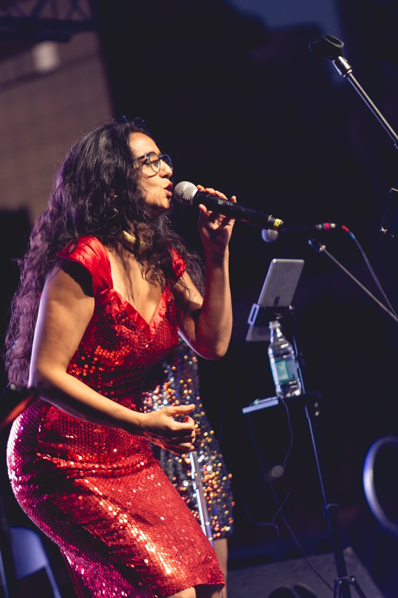
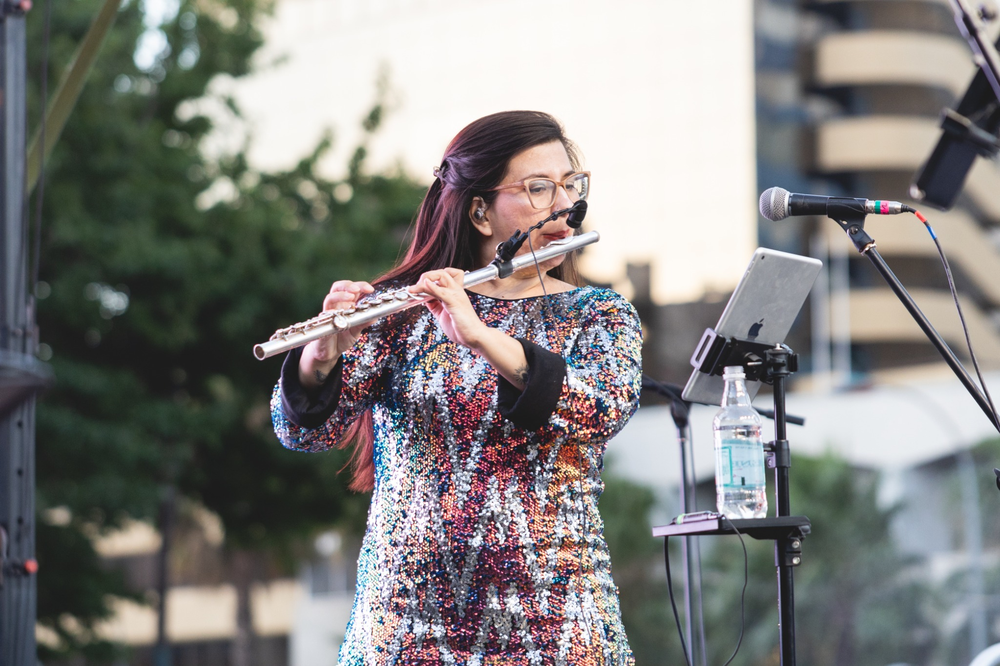
Corre, seduce, abandona, persigue y renace. Los músicos son el motor sonoro de esa ciudad. María habita el territorio del deseo. Gastón ocupa la intemperie. Después del derrumbe, ya no hay territorios limpios.
Rosas. Mesa. Silla. Banco. Sirena. Clavel de otro planeta.
María no entra para ser mirada. Entra para nombrarse. Su voz abre la noche.
Buenos Aires corre hasta que Gastón ve al niño que vende rosas en plena noche.
Cuando cae el ángel, cae también la forma que sostenía la escena.
Gastón escucha otra voz. No viene de la calle. Viene de su propio cuerpo.
María no salva a Nina. La reconoce. La sirena corta el aire.
La ternura se vuelve fuerza. El año 3001 aparece como promesa.
Declaración de María como cuerpo, voz, deseo y principio.
La ciudad se activa: vértigo, ruido, pulso y una tristeza que aparece y desaparece.
Gastón descubre la herida: un niño vendiendo rosas en plena noche.
Después de ver, Gastón ya no vuelve entero. Se convierte en pájaro nocturno.
La escenografía se cae. La mesa, las rosas y las sillas pierden su lugar.
Gastón acepta la locura como verdad y comienza su transfiguración.
María y Nina se reconocen desde la vulnerabilidad. Nina corre.
La ternura de María se vuelve fuerza creadora.
Renacimiento y promesa de fundar otra ciudad.
Después del futuro, vuelve la memoria.
Videos de trabajo para mostrar pulso, atmósfera, sonido y tensión escénica.
La ciudad se activa: velocidad, sombra y ritmo.
La noche revela la herida que nadie quiere mirar.
La escena se rompe. Todo pierde su lugar.
La ternura se vuelve potencia de nacimiento.
María es deseo, voz, ternura y renacimiento. Gastón es mirada, herida, locura y transformación. Nina es urgencia, vulnerabilidad y dignidad. Buenos Aires es organismo feroz.
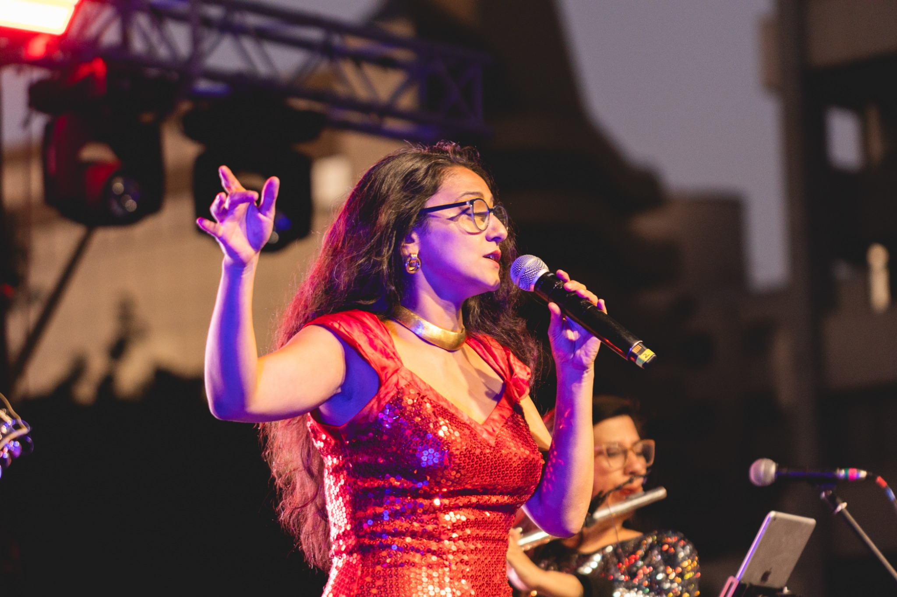
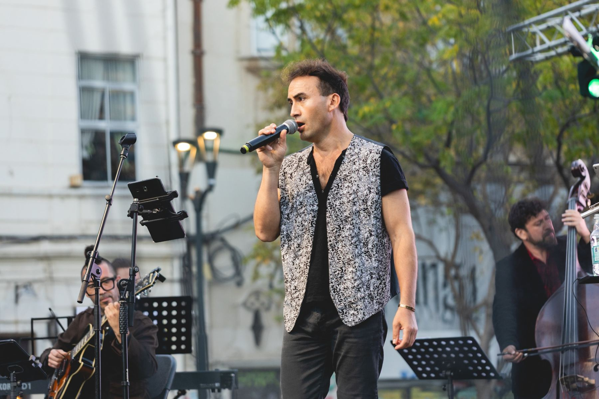

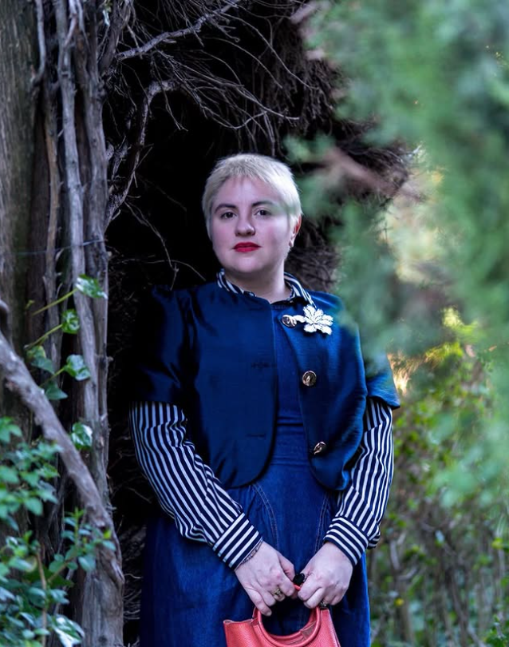
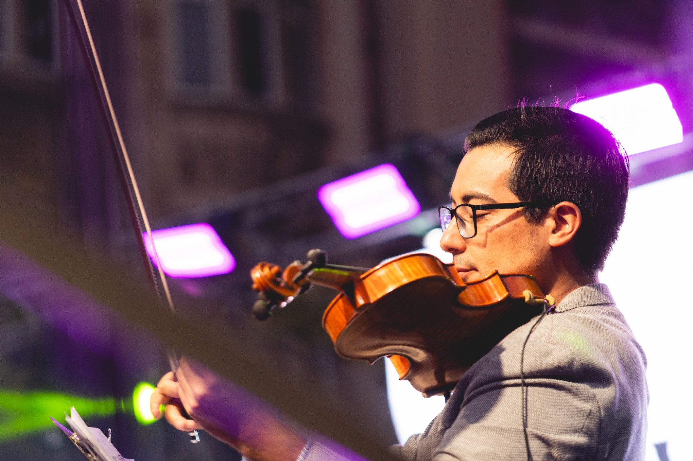
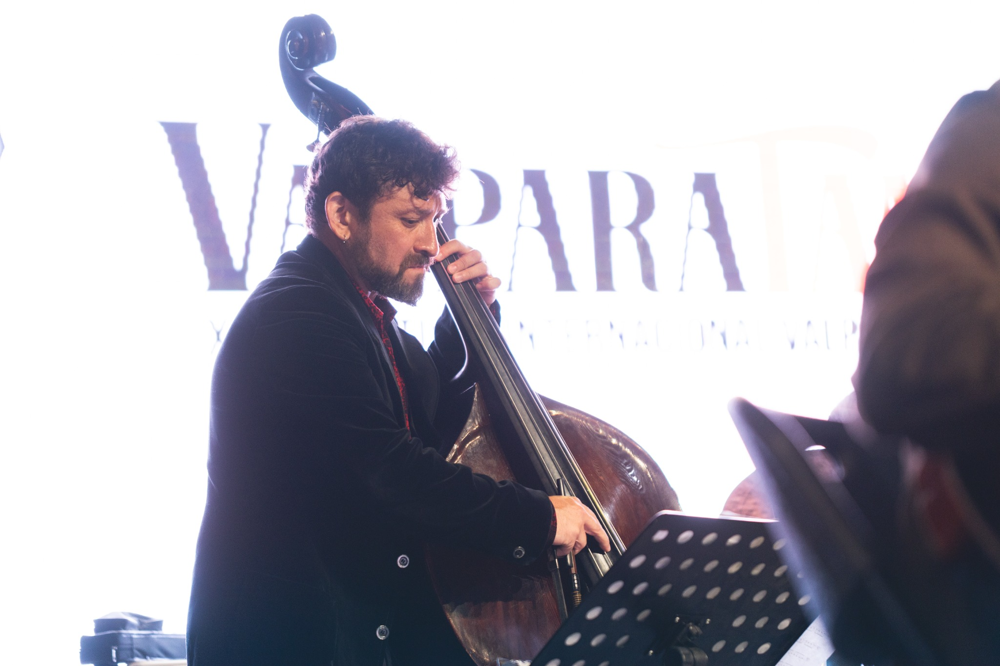
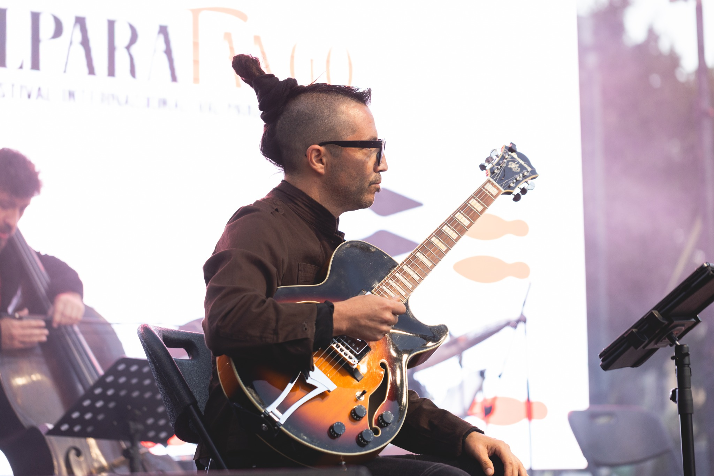
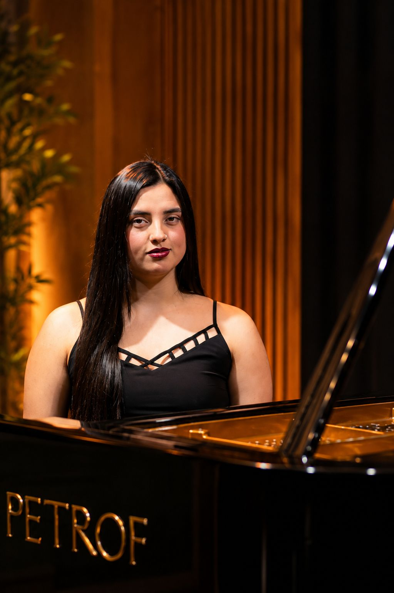

Flautista chilena, directora artística y creadora de proyectos donde la interpretación, la formación y la escena se cruzan con una mirada sensible, contemporánea y profundamente latinoamericana.
Desde 2021 dirige artísticamente Piazzollamente, agrupación dedicada a explorar la obra de Astor Piazzolla desde una lectura actual, escénica y expresiva. Su trabajo con el proyecto se ha presentado en el Teatro Regional Lucho Gatica, Sala SCD, Sala Master y el Festival Valparatango, con financiamiento del Ministerio de las Culturas de Chile e INAMU Argentina.
Su interés por Piazzolla nace desde una pregunta más profunda: cómo una música puede hablar del desarraigo, la migración, la ciudad, la memoria y la transformación. En su trabajo artístico ha buscado construir programas con sentido narrativo y abrir una forma de escucha donde la música no sea únicamente repertorio, sino experiencia.
Licenciada en Flauta Traversa por la Universidad Nacional de Cuyo (Argentina). Ha realizado estudios en la UNESP de Brasil, cursado la Cátedra Libre Astor Piazzolla en IUPA, y actualmente desarrolla una Maestría en Música Latinoamericana y una Diplomatura en Tango en la Universidad Nacional de San Martín.
Ha participado en estrenos, festivales y colaboraciones internacionales en Chile, Argentina, Paraguay, Brasil y Estados Unidos, incluyendo el Festival FEMUSC en Brasil y el Festival Darwin Vargas en Chile.
La escena no es decorado. Es territorio. Cada zona tiene una lógica emocional: lo que ocurre en el piso ocurre en el cuerpo. Lo que ocurre en la plataforma ocurre en la ciudad.
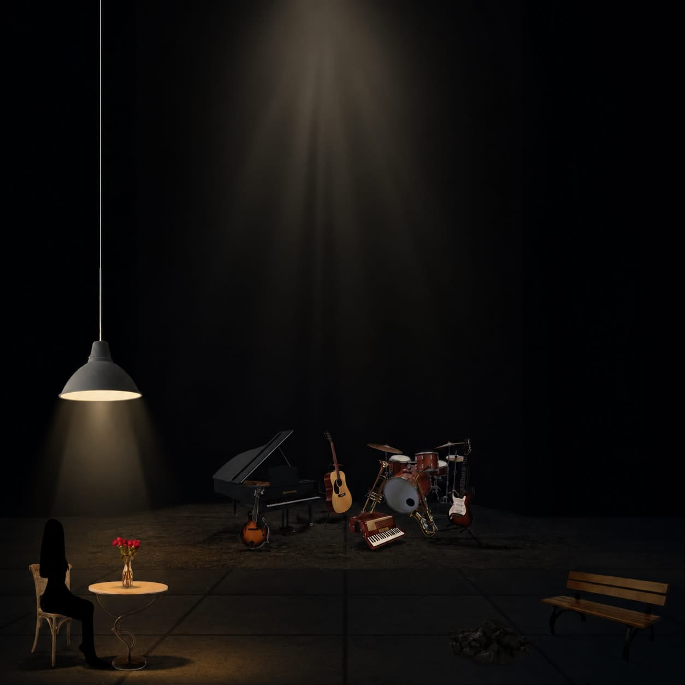
A la izquierda del escenario: mesa, silla, rosas y lámpara colgante. María habita ese espacio como dueña de su deseo. Al fondo, los músicos en plataforma elevada — el motor sonoro de la ciudad. El piso es el espacio dramático donde todo puede ocurrir.
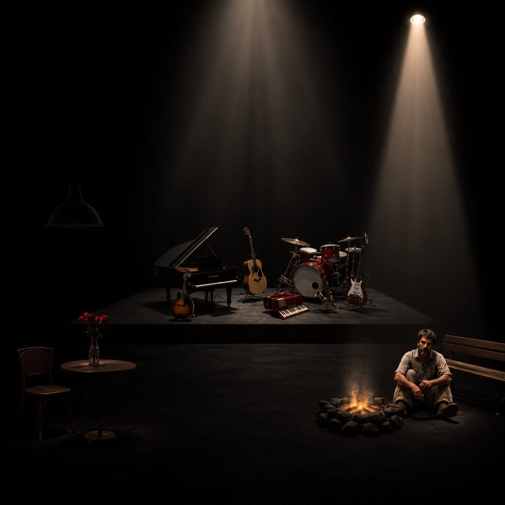
Gastón ocupa la intemperie del piso. Su cuerpo frente a las brasas, a la derecha. María en su espacio, a la izquierda. Dos focos de luz simultáneos que nunca se mezclan del todo. La distancia entre ellos es la obra.
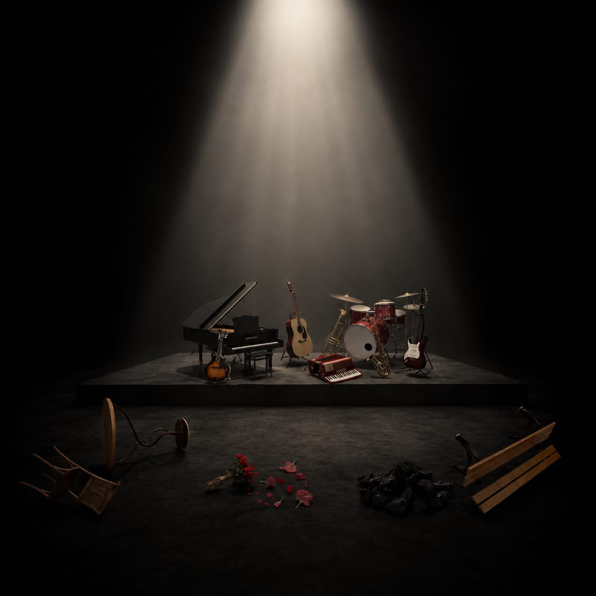
La silla volcada, el banco roto, las rosas esparcidas. Los objetos que sostenían el orden pierden su lugar. Los músicos permanecen en la plataforma. El piso queda como campo de ruinas desde donde nace el año 3001.
Todo lo necesario para evaluar y coordinar la presentación del espectáculo en tu sala.
| Duración | 60 minutos · sin intermedio |
| Actores en escena | 2 (cantantes-actores) |
| Músicos en escena | 7 intérpretes |
| Total en escena | 9 personas |
| Tipo de espacio | Teatro a la italiana o sala con escenario frontal y platea disponible |
| Escenografía | Plataforma para músicos · mesa · silla · banco · lámpara colgante · rosas |
| Público | Adultos · jóvenes · festivales de tango y música de cámara |
| Canales | 22 canales |
| Percusión | 10 ch Bombo in/out, caja, bordona, HiHat, Tom×2, Timbal, Overhead L/R |
| Cuerdas / teclas | 6 ch Contrabajo×2, Piano×2, Guitarra, Violín |
| Viento | 2 ch Flauta (mic propio), Voz flauta |
| Voces | 2 ch Cantante 1 y 2 · inalámbrico |
| Ambiente | 2 ch Sennheiser MKE 600 Shotgun L/R |
| Monitores | 7 mezclas · 6 piso + 1 IEM (flautista) |